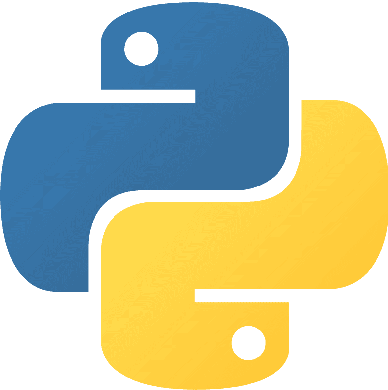
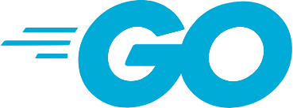
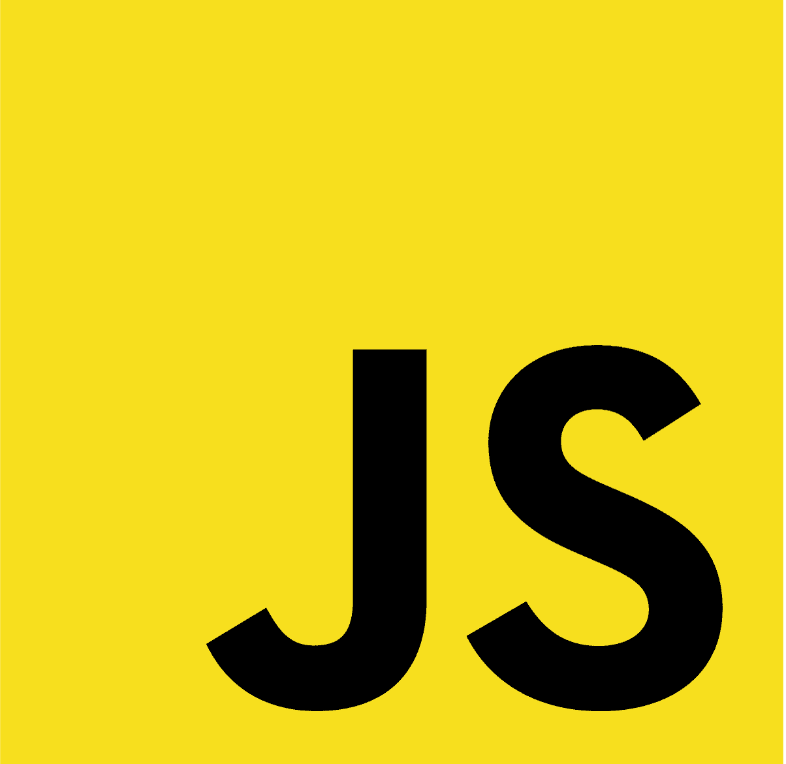
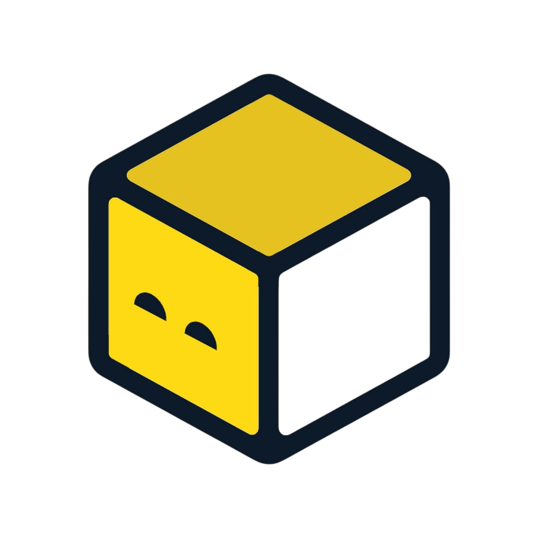
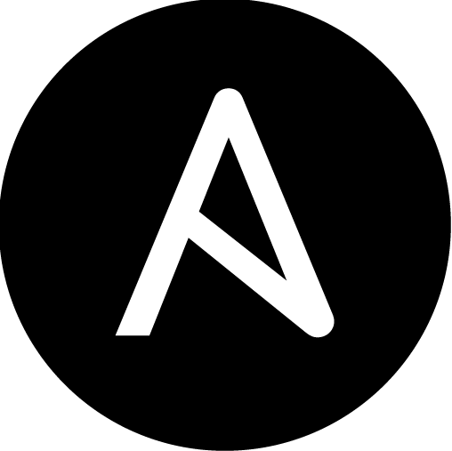
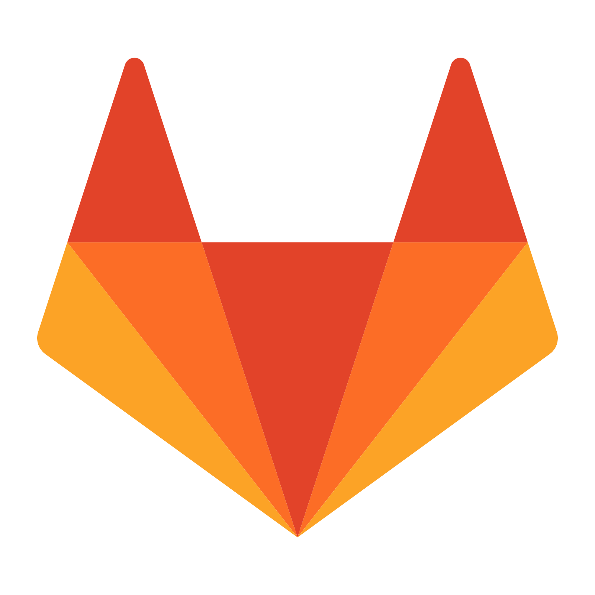
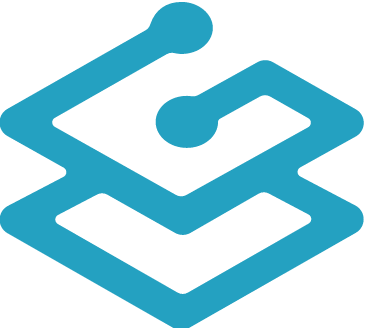
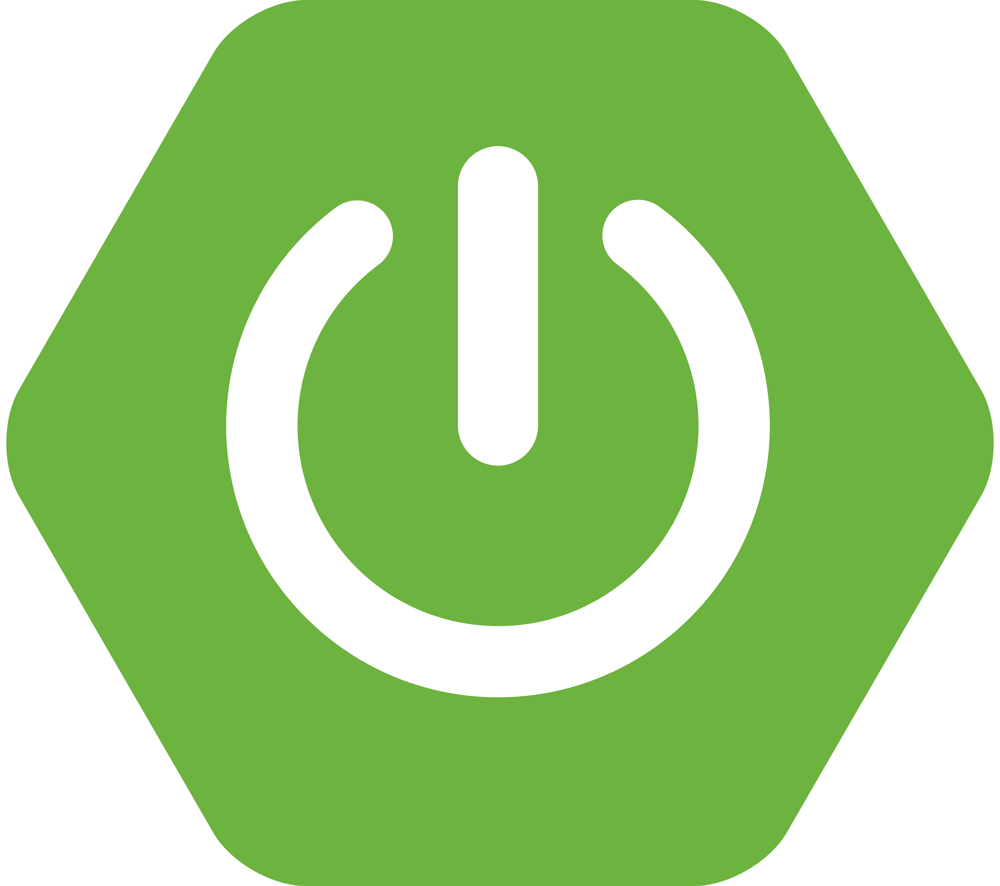

Hey ! I'm Imrane
Computer Science Master's student, looking for a DevOps or Backend work-study position (alternance) starting September 2026.

About
Computer Science Master's student — Backend & DevOps
Looking for a work-study position (alternance) starting September 2026
Autonomous and results-driven, I design and ship end-to-end projects — from Python/Java backends to cloud infrastructure. My two internships and academic projects have put me face to face with real production constraints.
My Journey
Internship at KYNTUS (EnerFYH division)
Solo development of two applications for a company in the energy sector. BESS Site Finder: desktop geospatial prospecting tool integrating 5 external data sources (IGN, Capareseau, RTE, BAN, DGFiP), including an in-house parcel-ownership lookup feature built to avoid a paid third-party API. Multi-project showcase site: React platform for local officials and residents, with a serverless backend that auto-publishes to GitHub.
Master's in Computer Science — ISIMA
Université Clermont Auvergne. Specialization in backend, DevOps, systems and networks.
DevOps Project — ACNHCollector
Complete DevOps pipeline, fully independent, on multi-cloud infrastructure. OpenTofu IaC, Ansible, OpenBAO secrets, GitLab CI/CD pipelines across 3 repos, Traefik reverse proxy, multi-stage Docker.
Internship at CRP-CPO
4 tools delivered in 2 weeks in a research environment. Web platform, survey analysis, generative music AI, reaction-time measurement app.
Bachelor's in Computer Science
Université de Picardie Jules-Verne, Amiens.
Skills

Python Java
Java
Go- C
- Bash
- PowerShell

JavaScript- PHP
 Docker
Docker
OpenTofu
Ansible
GitLab CI/CD
Traefik- Linux

Spring Boot- Flask
- React
 PostgreSQL
PostgreSQL MySQL
MySQL Git
Git
Experience
- Solo development of BESS Site Finder — desktop geospatial prospecting tool for battery energy storage system (BESS) projects, integrating 5 external data sources (IGN, Capareseau, RTE SimuRacco, BAN, DGFiP)
- Independently designed and shipped a parcel-ownership lookup feature built from public data (DGFiP), saving the company from adopting a paid third-party API — became one of the tool's most used features
- Custom parser turning the unstructured free-text output of the RTE grid-connection simulator into structured, filterable data
- Multi-project showcase site: React platform for local officials and residents, serverless backend (Vercel/Node.js) reading/writing a JSON file via the GitHub API, automated content publishing (admin form → commit → redeploy)
- Concurrent backend with throttling to handle public API rate limits; packaged as a standalone Windows executable (PyInstaller + PyWebView)
- Complete DevOps pipeline, fully independent, on multi-cloud infrastructure (Clever Cloud, OVH, EduInfra)
- Multi-cloud IaC with OpenTofu; automatic Ansible inventory generation from OpenTofu outputs
- Centralized secrets via OpenBAO (Vault-compatible) — dynamic, short-lived credentials
- GitLab CI/CD pipelines across 3 separate repos (backend, frontend, infrastructure)
- Traefik reverse proxy with Docker label-based routing; multi-stage containerization (Vue.js/Nginx + Spring Boot/JRE Alpine)
- 4 tools delivered in 2 weeks in a research environment
- Dynamic web platform for event management (React, WordPress)
- Survey analysis tool with automated interactive visualizations (PHP, MySQL)
- Emotion-conditioned generative music AI prototype — MIDI output (TensorFlow)
- Reaction-time measurement app for visual and audio stimuli (Python, PyQt5)
- Go microservices — REST API, asynchronous messaging with NATS JetStream, email notifications ⎇ GitHub
- POSIX mini shell with redirections, piping and process management (C, fork/exec) ⎇ GitHub
- Multi-agent bee colony simulation — Java, OOP, finite state machines ⎇ GitHub
- SSH brute-force detection via Linux logs + automated fail2ban protection
- Q-Learning reinforcement learning agent for Tic-Tac-Toe (Python, Tkinter)
- JobTrackerApi — personal ASP.NET Core REST API for job-application tracking, layered architecture (Controller/Service/DbContext), full audit trail of status changes, JWT authentication, containerized with Docker
- 2D mobile game client — Unity/C#, data-driven (ScriptableObjects) and event-driven architecture, battle UI fully generated at runtime